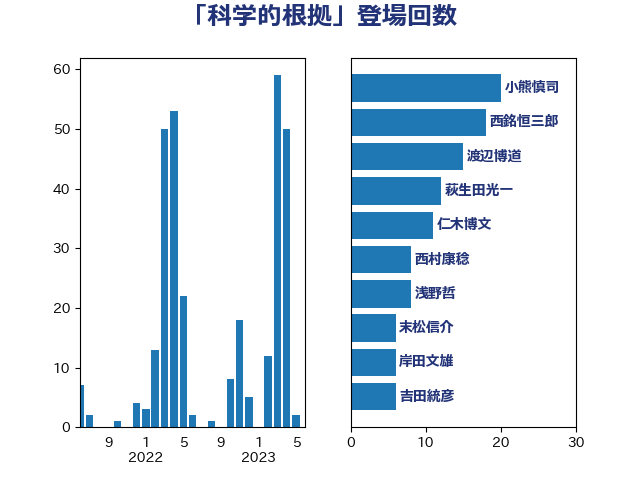

単語「科学的根拠」

| 小熊慎司 | 立憲民主党 | 20 回 |
| 西銘恒三郎 | 自由民主党 | 18 回 |
| 渡辺博道 | 自由民主党 | 15 回 |
| 萩生田光一 | 自由民主党 | 12 回 |
| 仁木博文 | 無所属 | 11 回 |
| 西村康稔 | 自由民主党 | 8 回 |
| 浅野哲 | 国民民主党 | 8 回 |
| 末松信介 | 自由民主党 | 6 回 |
| 岸田文雄 | 自由民主党 | 6 回 |
| 吉田統彦 | 立憲民主党 | 6 回 |
| 秋葉賢也 | 自由民主党 | 5 回 |
| 梅村みずほ | 日本維新の会 | 5 回 |
| 足立康史 | 日本維新の会 | 4 回 |
| 米山隆一 | 立憲民主党 | 4 回 |
| 石井正弘 | 自由民主党 | 4 回 |
| 太田房江 | 自由民主党 | 4 回 |
| 井坂信彦 | 立憲民主党 | 4 回 |
| 野村哲郎 | 自由民主党 | 3 回 |
| 空本誠喜 | 日本維新の会 | 3 回 |
| 神津たけし | 立憲民主党 | 3 回 |
| 石川大我 | 立憲民主党 | 3 回 |
| 田中健 | 国民民主党 | 3 回 |
| 後藤茂之 | 自由民主党 | 3 回 |
| 小島敏文 | 自由民主党 | 3 回 |
| 塩田博昭 | 公明党 | 3 回 |
| 吉良よし子 | 日本共産党 | 3 回 |
| 加藤勝信 | 自由民主党 | 3 回 |
| 青柳陽一郎 | 立憲民主党 | 2 回 |
| 菅家一郎 | 自由民主党 | 2 回 |
| 福島みずほ | 社会民主党 | 2 回 |
| 田名部匡代 | 立憲民主党 | 2 回 |
| 林芳正 | 自由民主党 | 2 回 |
| 杉尾秀哉 | 立憲民主党 | 2 回 |
| 斉藤鉄夫 | 公明党 | 2 回 |
| 庄子賢一 | 公明党 | 2 回 |
| 平山佐知子 | 無所属 | 2 回 |
| 川合孝典 | 国民民主党 | 2 回 |
| 島村大 | 自由民主党 | 2 回 |
| 山田勝彦 | 立憲民主党 | 2 回 |
| 山口壯 | 自由民主党 | 2 回 |
| 城井崇 | 立憲民主党 | 2 回 |
| 伊藤孝江 | 公明党 | 2 回 |
| 中谷真一 | 自由民主党 | 2 回 |
| 齋藤健 | 自由民主党 | 1 回 |
| 高橋光男 | 公明党 | 1 回 |
| 高市早苗 | 自由民主党 | 1 回 |
| 阿部弘樹 | 日本維新の会 | 1 回 |
| 阿部司 | 日本維新の会 | 1 回 |
| 長友慎治 | 国民民主党 | 1 回 |
| 野間健 | 立憲民主党 | 1 回 |
| 野田佳彦 | 立憲民主党 | 1 回 |
| 野中厚 | 自由民主党 | 1 回 |
| 逢坂誠二 | 立憲民主党 | 1 回 |
| 赤嶺政賢 | 日本共産党 | 1 回 |
| 谷合正明 | 公明党 | 1 回 |
| 角田秀穂 | 公明党 | 1 回 |
| 西野太亮 | 自由民主党 | 1 回 |
| 西村明宏 | 自由民主党 | 1 回 |
| 藤木眞也 | 自由民主党 | 1 回 |
| 芳賀道也 | 国民民主党 | 1 回 |
| 緑川貴士 | 立憲民主党 | 1 回 |
| 笠井亮 | 日本共産党 | 1 回 |
| 竹詰仁 | 国民民主党 | 1 回 |
| 竹内真二 | 公明党 | 1 回 |
| 福島伸享 | 無所属 | 1 回 |
| 礒崎哲史 | 国民民主党 | 1 回 |
| 石垣のりこ | 立憲民主党 | 1 回 |
| 漆間譲司 | 日本維新の会 | 1 回 |
| 浜口誠 | 国民民主党 | 1 回 |
| 河西宏一 | 公明党 | 1 回 |
| 池畑浩太朗 | 日本維新の会 | 1 回 |
| 江田憲司 | 立憲民主党 | 1 回 |
| 横山信一 | 公明党 | 1 回 |
| 柚木道義 | 立憲民主党 | 1 回 |
| 早坂敦 | 日本維新の会 | 1 回 |
| 徳永エリ | 立憲民主党 | 1 回 |
| 川田龍平 | 立憲民主党 | 1 回 |
| 山本剛正 | 日本維新の会 | 1 回 |
| 山岡達丸 | 立憲民主党 | 1 回 |
| 山下芳生 | 日本共産党 | 1 回 |
| 小野泰輔 | 日本維新の会 | 1 回 |
| 小林茂樹 | 自由民主党 | 1 回 |
| 小山展弘 | 立憲民主党 | 1 回 |
| 寺田静 | 無所属 | 1 回 |
| 安江伸夫 | 公明党 | 1 回 |
| 大串正樹 | 自由民主党 | 1 回 |
| 坂井学 | 自由民主党 | 1 回 |
| 倉林明子 | 日本共産党 | 1 回 |
| 佐藤啓 | 自由民主党 | 1 回 |